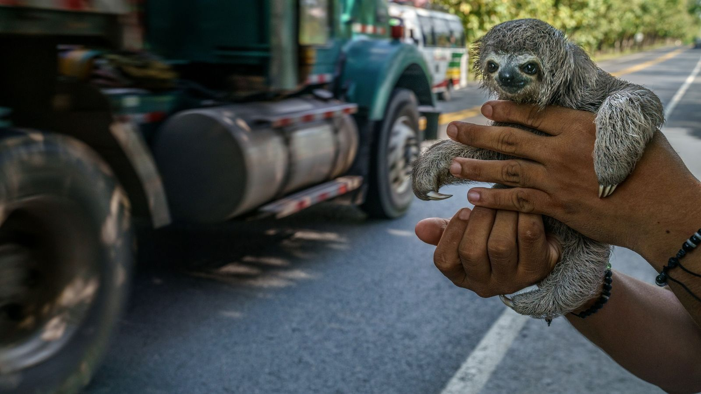
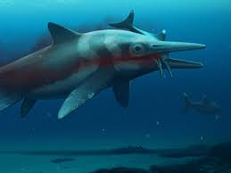
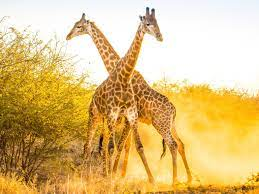
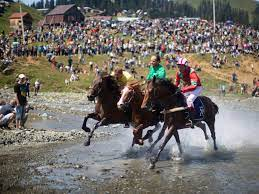

Animals Wildlife watch
On the trail of Colombia's sloth cartel
Read

Science
Giant 'sea monster' fossil is one of the larges of its kind
Read
Travel
This ancient city of sultans is a 21st-century wonder
Read
TODAY'S PICKS

Animals
Giraffe populations are rising, giving new hope to scientists

Travel
How climbers faced down this harrowing 'death zone'
History & Culture
How music is used to heal the sick in Appalachia.
Magazine INNOVATOR
This schientist is digging deep to find our ancestors
History & Culture
Did hallucinogenic booze fuel politics in ancient Peru?

PAID CONTENT
Four seasons of culture in Georgia